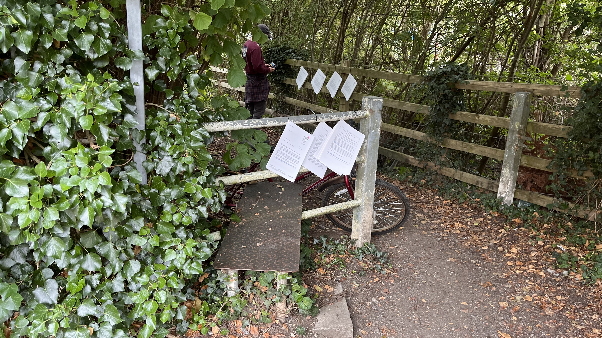

Help us preserve this important local pathway connecting Botley to the Hinkseys.
A public right of way is a legal path which everyone has the right to use. The Electric Road pathway connects Botley to the Hinkseys and provides vital access for walkers and cyclists. Protecting this path preserves our community’s heritage and promotes healthy, sustainable travel.
The Electric Road has served as a local route for over 100 years, connecting neighborhoods and offering a scenic country walk just outside Oxford city centre.
You can support the right of way application by submitting evidence using the forms below. Download, print, and fill out the blank evidence form. You can also review an example completed form for guidance.
Drop off completed forms at the community centre or post to:
Electric Road Right of Way Application
South Hinksey Parish Council Office
[Your postal address here]
A public right of way is a path legally protected for public use.
Photos, witness statements, and historical maps can all support the application.
Anyone who uses or values the pathway can submit evidence.
Please submit your evidence forms by [insert deadline date].
For inquiries, please email us at joseph.denby@southhinksey-pc.gov.uk.
You can also visit us at the South Hinksey Parish Council Office during office hours.